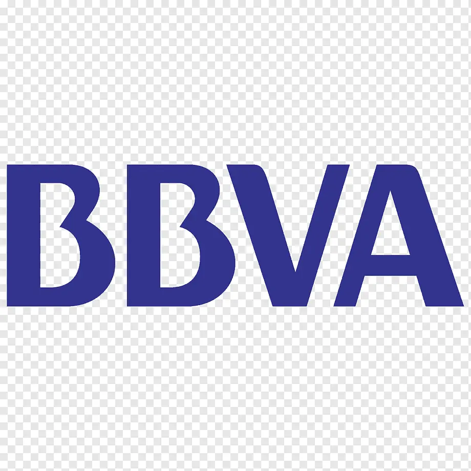

Diplomado de Especialización: “Gestión de la Calidad e Inocuidad en la Industria Alimentaria”
Desarrollar competencias para implementar y auditar sistemas de gestión de calidad e inocuidad alimentaria basados en HACCP, ISO 9001, ISO 22000 y BRCGS.
Duración384 Horas Académicas
Estructura6 Módulos Clave
Modalidad100% Asíncrono (Grabado)
CertificaciónCon Código QR Oficial
¿Por qué especializarte con nosotros?
Aula Virtual Permanente
Accede las 24 horas del día, los 7 días de la semana, sin límites ni caducidad de acceso.
Material y Recursos de Aplicación
Libros, plantillas editables de registros, manuales y casos prácticos reales para tu trabajo.
A Tu Propio Ritmo
Avanza según tu disponibilidad de tiempo y compatibiliza tus estudios con tus labores profesionales.
Certificado Verificable con QR
Respaldo institucional de 384 horas académicas para postular a mejores oportunidades laborales.
Objetivo y Público
Objetivo General: Desarrollar competencias sólidas para diseñar, implementar, mantener y auditar sistemas integrados de gestión de calidad e inocuidad alimentaria bajo los estándares más exigentes: HACCP, ISO 9001, ISO 22000 y BRCGS Food Safety.
¿A quién está dirigido?
Profesionales, supervisores y técnicos de plantas de alimentos, jefes de control y aseguramiento de la calidad (QA/QC), auditores internos, consultores, docentes y estudiantes de últimos ciclos de Ingeniería de Industrias Alimentarias, Agroindustrial, Biología, Química, Nutrición y carreras afines.
Competencias del Egresado
Al culminar con éxito este diplomado, estarás plenamente capacitado para:
Implementar y liderar sistemas de gestión de calidad e inocuidad en empresas del sector agroalimentario.
Diseñar y fiscalizar Programas Prerrequisitos (BPM, POE y POES) según normativa vigente.
Elaborar, validar y actualizar planes HACCP adaptados a diversos procesos industriales.
Interpretar y articular con solidez las cláusulas de las normas ISO 9001:2015 e ISO 22000:2018.
Aplicar los requisitos fundamentales del estándar global BRCGS Food Safety V.9.
Planificar y ejecutar auditorías internas de sistemas integrados bajo la directriz ISO 19011.
Plan de Estudios Modular
Programa estructurado en 6 módulos exhaustivos con enfoque técnico y normativo de vanguardia:
MÓDULO IContexto Nacional e Internacional de la Calidad e Inocuidad
Contexto de la Inocuidad Global y cadenas de suministro alimentarias.
Enfermedades Transmitidas por Alimentos (ETAS) y su impacto en salud pública.
Organismos reguladores en el Perú (DIGESA, SANIPES, SENASA) y rol de la COMPIAL.
Regulación Nacional vs. Codex Alimentarius (Directrices internacionales).
Exigencias para exportación: FDA (EE.UU.) y Unión Europea.
Principios Generales de Higiene de los Alimentos CAC/RCP 1-1969 (Revisión y actualización 2022).
MÓDULO IIProgramas Prerrequisitos del Sistema HACCP (BPM, POE y POES)
Buenas Prácticas de Manufactura como cimiento indispensable para ISO 22000 y BRCGS.
Infraestructura, diseño higiénico de instalaciones, líneas y utensilios.
Higiene del personal, estado de salud y programas de capacitación continua.
MIP: Manejo Integrado y Control de Plagas.
Mantenimiento preventivo, calibración de equipos y calidad microbiológica/fisicoquímica del agua.
Prevención rigurosa de la contaminación cruzada física, química y biológica.
Elaboración, implementación y validación de POE y POES en planta.
MÓDULO IIISistema HACCP: Análisis de Peligros y Puntos Críticos de Control
Fundamentos y los 7 principios del Sistema HACCP.
Los 5 pasos preliminares: Equipo multidisciplinario, descripción técnica del producto, uso previsto, diagramas de flujo y confirmación in situ.
Metodología de Análisis de Peligros y determinación de significancia.
Árbol de decisiones para identificación certera de PCC (Puntos Críticos de Control).
Establecimiento de Límites Críticos y sistemas de vigilancia operativa continua.
Diseño de acciones correctoras inmediatas y planes de contingencia.
Procedimientos de verificación, validación técnica y sistema documental y de registros.
MÓDULO IVSistemas de Gestión de Calidad e Inocuidad (ISO 9001 e ISO 22000)
ISO 9001:2015 e ISO 22000:2018 (Estructura de Alto Nivel y Visión Integrada):
Enfoque basado en procesos y pensamiento basado en riesgos integrales.
Sinergia entre satisfacción del cliente e inocuidad alimentaria garantizada.
Elementos clave de la norma ISO 22000:
Programas Prerrequisito Operativos (PPRO) vs. PCC.
Comunicación interactiva a lo largo de la cadena alimentaria.
Evolución y tendencias normativas: cambios proyectados en las normas internacionales hacia 2026.
MÓDULO VNorma BRCGS Estándar Global de Seguridad Alimentaria (Versión 9)
Introducción y alcance del esquema GFSI mediante BRCGS Food Safety V.9.
Requisitos fundamentales y cláusulas de no conformidad crítica.
Liderazgo, compromiso de la dirección y fortalecimiento de la Cultura de Inocuidad.
Plan de seguridad alimentaria y gestión de proveedores de materias primas/empaques.
Control de operaciones, estándares ambientales de las instalaciones e inspección de procesos.
Gestión de alérgenos, defensa alimentaria (Food Defense) y prevención del fraude alimentario (Food Fraud).
MÓDULO VIAuditoría de Sistemas Integrados de Gestión (ISO 19011)
Principios de auditoría y directrices según la norma ISO 19011.
Perfil, competencias, ética y habilidades de comunicación del auditor líder e interno.
Planificación, programa de auditoría y elaboración de listas de verificación eficaces.
Técnicas de muestreo, entrevista y recopilación de evidencias objetivas.
Redacción de no conformidades, hallazgos de auditoría e informe final.
Cierre de acciones correctivas, seguimiento de la eficacia y tendencias ISO 19011:2026.
Metodología de Aprendizaje
El diplomado se imparte en modalidad 100% asíncrona, brindándote flexibilidad total para avanzar sin presiones de horarios. Cuentas con un campus virtual moderno con acceso las 24 horas:
1
Estudia a tu ritmo
Mira las sesiones grabadas de alta definición y descarga las diapositivas y manuales.
2
Aplica lo aprendido
Revisa casos de estudio reales de plantas alimentarias y plantillas de trabajo.
3
Certifícate
Rinde tu evaluación final en la plataforma virtual y recibe tu certificado digital oficial con QR.
Requisitos de Aprobación: Para obtener el Certificado de Aprobación se requiere una calificación mínima de 14 puntos en la evaluación final. En caso contrario, se expedirá el Certificado de Participación por las horas académicas correspondientes.
Medios de Pago y Matrícula
Elige la opción que más te acomode para realizar tu inversión:
Sin comisión
Yape / Plin
Transfiere de forma inmediata desde tu app móvil. Titular: Claudia Rubio Jiménez
+51 971 625 142

Banca Móvil
Transferencia BBVA
Cuenta Ahorros Soles (vía app móvil). Titular: Proinocuidad Consultoría y Capacitación Alimentaria E.I.R.L.
0011-0900-0200684705
CCI: 011-900-000200684705-83
Internacional
Extranjero (US$ 37)
Paga fácilmente desde cualquier país mediante PayPal o giro Western Union.
Abre tu aplicación bancaria o billetera digital favorita (Yape, Plin o BBVA) y escanea directamente este código para realizar tu abono en segundos.
Titular de la cuenta:Proinocuidad Consultoría y Capacitación Alimentaria E.I.R.L.
Aviso bancario: La cuenta BBVA aplica sin comisión únicamente para transferencias móviles. En caso de realizar abono en ventanilla bancaria o agente físico fuera de Trujillo, considerar adicionar S/ 7.50 por comisión interplaza.
¿Cómo formalizar tu inscripción?
Efectúa tu pago correspondiente mediante cualquiera de los medios oficiales de Proinocuidad señalados arriba.
Completa el formulario de inscripción adjuntando tu comprobante o voucher de pago.
Envíanos un mensaje a nuestro WhatsApp +51 981 365 982 para la confirmación y habilitación inmediata de tu usuario en el Aula Virtual.
Preguntas frecuentes
¿En qué consiste el diplomado?
En 6 sesiones asíncronas (384 horas académicas) para desarrollar sistemas de gestión de la calidad e inocuidad alimentaria: programas prerrequisitos, HACCP, ISO 9001, ISO 22000 y BRCGS Food Safety V9, hasta la auditoría de sistemas integrados.
¿Es 100% asíncrono y puedo avanzar a mi ritmo?
Sí: se cursa en aula virtual permanente disponible las 24 horas, sin límites ni caducidad de acceso, para compatibilizar el estudio con tus labores.
¿El certificado es verificable?
Sí: se emite un certificado digital con código QR oficial que respalda las 384 horas académicas del programa.
¿Cómo pago la matrícula?
Con los medios de pago detallados en la sección Medios de Pago y Matrícula de esta ficha (QR del banco y wallets digitales); al inscribirte adjuntas el voucher de pago en el formulario.